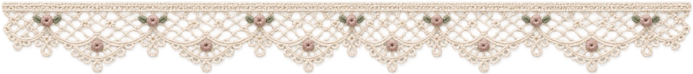
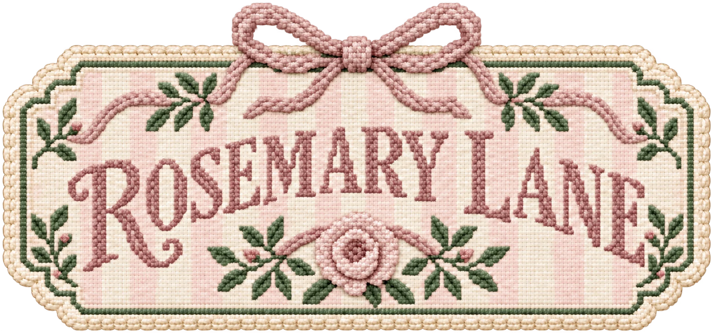

For your first stitches
A relaxed introduction to needlepoint, with individual guidance as you get comfortable with the canvas and practice your stitches. We can talk through your experience and what you'd like to learn.


DESIGNA place to stitch, create & gather

I'm a dedicated educator with a deep passion for teaching that spans over three decades. Beyond the classroom, my favorite way to unwind and express my creativity is through needlepoint, something I've been doing since my teens! My mother inspired me with her beautiful needlepoint creations.
I love the blend of artistic challenge, relaxation, and the beautiful finished product that comes with every canvas. For me, needlepoint is the ultimate mindful hobby: it's portable enough for a flight or a waiting room, pairs perfectly with a great podcast or audiobook, and offers a wonderful, screen-free escape you can pick up or put down anytime.
Lately, I've taken my love for the craft a step further by teaching individual and group classes, and collaborating with local artisans on Cape Cod, my favorite place to wind down.
Follow me @rosemarylanedesign on IG and rosemarylanedesigns.com, and come be inspired!
Just for you
Personal instruction for first stitches, new techniques, and projects of your own.
A relaxed introduction to needlepoint, with individual guidance as you get comfortable with the canvas and practice your stitches. We can talk through your experience and what you'd like to learn.
Get help with a canvas you're working on, explore a new stitch, or work through the next step together. Share the project you have in mind when you inquire.
Send your experience level, the project you'd like to work on, and your preferred dates. Ask about availability, lesson length, location, materials, and pricing before booking.


Stitch together
Private stitching parties and guided needlepoint classes at Cape Cod hotels, clubs, and other beautiful gathering places.
Bring friends together for a private stitching party, or explore a guided group class at a Cape Cod hotel, club, or venue. It's a chance to learn, make something by hand, and enjoy a little time together.
A bag charm is one class project to ask about, with basketweave, brick stitch, and French knots to explore.
Tell me your approximate group size, preferred date and location, and the group's stitching experience. We can discuss a suitable project, class format, materials, and timing together.
Get in touch to ask about availability and pricing for your gathering.
A project to make your own.
Prefer to stitch on your own time? Explore a DIY project for a quiet afternoon, something to take along, or a creative gift. Ask about available designs and the full kit for the project you have in mind.

Tell me which project interests you and your stitching experience. Ask about the canvas, threads, needle, stitch guidance, finishing supplies, and any tools you'll need. I'll share available designs, what's included in your chosen kit, and pricing so you can plan your project.
Find us around the Cape
Find us at neighborhood gatherings, seasonal events, and pop-ups around Cape Cod. We bring a lovely assortment of DIY needlepoint kits for you to take home and make your own.
Made just for you
Custom canvases and keepsakes designed around you—from signs, ornaments, and belts to personalized straps for Nantucket baskets and other favorite bags.
Stitched inspiration and beautiful details.


Ask about private lessons, parties, Cape Cod pop-ups, or something custom-made.
See the latest posts on Instagram.